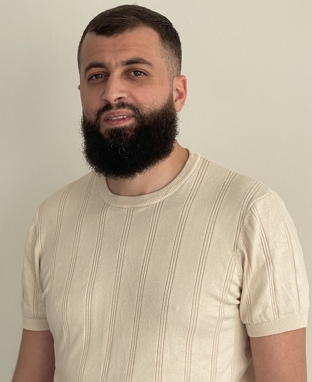

Student Systeem- en Netwerkbeheer
Portfolio Systeem- en Netwerkbeheerder

Ik studeer Systeem- en Netwerkbeheer aan AP Hogeschool en heb interesse in serverbeheer, netwerken en cybersecurity. In dit portfolio verzamel ik mijn opdrachten, laat ik zien hoe ik te werk ga en wat ik eruit leer.

Kennis die ik opbouw
Windows en Linux
Ik leer de basis van Windows en Linux kennen.
Netwerken
Ik leer hoe een netwerk is opgebouwd.
HTML, CSS en Tailwind
Ik oefen met de structuur en opmaak van webpagina's.
Uitgelicht project
Hier komt binnenkort een opdracht uit mijn opleiding. Ik zal tonen wat ik heb gemaakt en wat ik eruit heb geleerd.
Bekijk de uitwerkingMijn achtergrond
Ik werkte als telecomtechnieker bij Proximus. Ik plaatste installaties bij particulieren en bedrijven en loste technische storingen op. Daar leerde ik rustig zoeken naar de oorzaak van een probleem en technische zaken uitleggen. Die praktijkervaring neem ik mee in mijn opleiding.